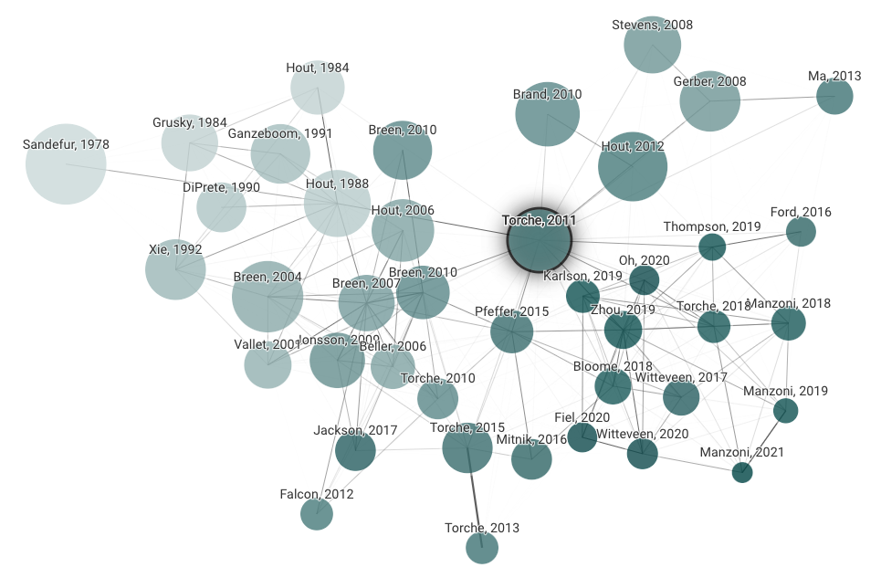

1 研究計画を立てる
本章では、データ分析に着手し、論文をまとめるための大前提となる研究計画の立て方を説明する。
1.1 研究計画とは
何も考えずにただデータを分析し始めても、よい論文を書くのは難しい。実際にデータを開いて分析を始める前に十分に計画を練っておくことで、有意義な論文を書くことにつながる。そこで後期が始まるまでに、グループごとに研究計画書を作成してもらう。研究計画書では以下のような内容を書く。分量としてはだいたい3–5ページくらい（参考文献リスト含む）。ここで書いた研究計画書を最初のたたき台として、データ分析を行い、期末レポートを執筆する。
研究計画書は、以下の4つの要素からなる：
- 研究背景
- 研究目的・問い
- 方法
- 参考文献
これら研究計画に書いた内容は、たんに計画を立てるというだけでなく、これを土台にして（膨らませて）論文にしていくものでもある。研究計画は次のような役割を果たす：
- 何を明らかにするのか（問い）を明確にする：問いは、何をどのように分析するのかについての指針を与えてくれる。問いが明確であるほど、やるべきことはクリアになる。
- 先行研究で解かれていない謎を明確にする：先行研究を整理することで、先行研究で解かれていない点や、矛盾している点、先行研究のやり方では十分に明らかにできていないことが見えてくる。
- 問いがなぜ重要なのかを明確にする：先行研究で解かれていないことやまだ明らかになっていないことがあるのは、もしかするとそれらがあまり重要ではないからかもしれない。問いがなぜ重要なのか、何が問うに値する重要な問いなのかをあらかじめきちんと考えておけば、あまり重要ではない問いに時間を浪費せずにすむ。
よく練られた研究計画であればあるほど、論文を書くときの苦労は少なくなり、よい論文につながる可能性は高くなる。たとえば自分で調査をしたり実験をしたりしてデータを集めるときに研究計画が重要であることは言うまでもない。しかしながら、たとえこの授業のように自分でデータを集めないのだとしても、上記の効用はとても大きく、研究計画の作成には時間をかける価値がある。以下、上記の要素一つひとつについてくわしくみていく。
1.2 研究背景
研究背景は、次の2–4段落からなる。
1.2.1 問題背景（1段落程度）
研究で扱いたい問題が社会問題としてand/or社会学的に重要であることを述べる。
- 社会問題として重要、というのは、平等、人権、健康、持続可能性などなど、人間社会において重要とされている価値に照らして、その重要性を主張するものである。一見個人的な問題であっても社会問題と関わりをもつことは多いので1、必ずしも世の中で「社会問題」だと言われている必要はない。どのようなトピックであっても、それがなぜ社会問題として重要であるのかを考える必要がある。また、その問題の重要性や規模感を示す根拠として公的統計の値などを提示することもある。
- 社会学的に重要、というのは、社会学で伝統的に扱われてきた問題に照らして、その重要性を主張するものである。不平等に関係する社会学の伝統的な問題としては、世代間社会移動、教育機会の不平等、労働市場におけるジェンダー不平等、家族形成のパターン、夫婦間の無償労働の分担（権力関係）などが挙げられる。伝統的に扱われてきた問題はそれだけその重要性が認められており、したがって扱うトピックが重要であることを示す根拠にもなる。
もちろん、「自分が関心を持った」というのは最初のモチベーションとして大事だが、「自分が関心をもった」というだけでは、他の人にとっては説得的できない。他の人にとって関心をもってもらえるような理由を述べることが大事である。
1.2.2 先行研究の整理（1–3段落程度）
先に述べた問題に関連して、先行研究がこれまでに何を明らかにし、何を明らかにしていないのか、あるいは先行研究に存在する限界点を提示する。
調べた先行研究を1つひとつすべて羅列するわけではなく、それらをまとめた全体像を意識する。
先行研究の検討を通じて、（重要であるにもかかわらず）明らかになっていないこと・課題が何かを示す。この箇所こそが、自分たちの研究で解く「問い」になる。研究のオリジナリティを示すためには、十分に先行研究を読み込み、整理しなければならない。
先行研究が乏しいからといって、必ずしもそのテーマが「悪い」テーマであるということではない。重要であるにもかかわらず、これまで注目されてこなかったり、利用可能なデータが限られていたりするために十分に扱われていないテーマは少なくない。ただし、あまり扱う意義がない（社会問題として and/or 社会学的に重要性が低い）ために先行研究が少ないという場合には、そのテーマを選択するのはあまり良くないだろう。両者の違いはしばしば見分けるのが難しいので、教員に相談するとよい。
1.3 研究目的・問い
研究目的・問いは、次の1–3段落程度からなる。
1.3.1 研究目的・問い（1–2段落程度）
研究目的（問い）を提示する。「xxxを明らかにする」「どの程度yyyなのか？」など、何をやるのかが明確な問いを提示する。
社会調査データを使った分析で取り組まれる問いには、大きく分けて2種類の問いがある。
- 記述的問い：実態を明らかにすることを目的とする問い。すでに明らかになっている実態をさらに掘り下げてみていくことも含まれる。
- 説明的問い：実態が明らかになっていることを（ある程度）前提として、それがなぜ生じるのかを明らかにすることを目的とする問い。
問いを立てるときには、先行研究をよく読んで、問いを「絞る」ことが大切になる。たとえば、「なぜジェンダー格差があるのか？」というのは、問いの形ではあるけれども、それだけではあまりに大きすぎ、かつ漠然としているため、到底1つの論文で答えることはできず、分析の焦点もぼやけてしまう。そこで、答えることができる問いへと焦点を絞っていくことが大事になる。
問いを絞るときには、次のような要素を考えるとよい。
- 誰を対象とするのか？：国、時代、年齢、就業状態、など
- どのような集団どうしを比較するのか？：男性と女性、ひとり親世帯出身者とふたり親世帯出身者、大卒者と非大卒者、既婚者と未婚者、時代、など
- 何の変数を比較するのか？：教育達成、賃金、幸福度、友人の有無、など
また、問いを立てるときには、実際にデータによって検証可能な問いにする必要がある。社会問題として and/or 社会学的に重要な問いはいくらでもあるが、問いに答えるのに十分な情報を収集したデータがなければ、検証することはできない。そのような場合には、類似する検証可能な問いに変換したり、別の問いを探したりする必要がある。完璧なデータというのは存在しない以上、問いをずらして検証可能なようにするというのはよく行われることである。
たいていの場合、問いは「大きすぎる」ことが多い。問いを絞れているというのはつまり、それだけ先行研究をチェックして、何がわかっていないのかを特定できているということであるから、問いは小さくても構わないどころか、むしろ小さい方がよいといえる（ただし、あまりに小さすぎて意義がほとんどないというのはよくない）。どんなに小さくても、明確な問いを立ててそれを検証することができれば、それによってこれまでわかっていなかったことを明らかにするという貢献につながる。
1.3.2 仮説（1段落程度、あれば）
上記の問いに対する仮説を提示する。1つでもよいし、複数（最大で4つほど）あってもよい。このとき、ただ仮説だけを書くのではなく、そのような仮説が導かれる根拠（なぜそのように考えられるのか？）についても書く。仮説を導くときには、理論（的に考えること）がしばしば有効である。
仮説は、「男性は女性と比べて近所との付き合いが少ない」「所得が高いほど、政府による所得の再分配に反対しやすい」といったように、比較の視点が入っており、かつ、検証可能なものであるとよい。
1.4 方法
1.4.1 データ
何の調査データを使用するのかを書く。またその調査データがどのような人を対象としており、いつ、どのような方法で調査が実施されたのか、どのような質問項目を聴取しているのかについて書く。
1.4.2 分析対象
実際に分析する対象（母集団）について書く。たいていの社会調査データは広い母集団を対象としているので、そこから分析対象を絞ることが多い。何歳から何歳までか。男性も女性も含むか、どちらかだけか。働いている人か、働いていない人も含むか、結婚している人か、など。
データや分析対象が先に設定した問いときちんと対応しているかをよく確認する。たとえば、「親の労働時間が長いと子どものメンタルヘルスは悪化するのではないか？」という問いを立てたとする。このような場合であれば、子どもを分析対象とする必要があり、大人（成人）を対象とした調査では答えることが難しい。また、子どもを対象とした調査だとしても、親の労働時間を尋ねていない調査であったとしたら、やはりこの問いには答えることができない。
1.4.3 使用する変数
従属変数、独立変数、あるいは統制変数について、使用予定の変数を書く。また、変数の名前だけでなく、どのように値を加工するかについても書くと良い。たとえばJGSSの場合は次のように書く。
- 子どもへの教育費支出（SZEXED：世帯支出 - 教育費）。回答区間の中央値をとって、連続変数に変換する。
- 本人の最終学歴（XXLSTSCH：最終学校（本人））。中学、高校、短大高専、大学の4カテゴリにまとめる。
1.4.4 分析方法
クロス集計、散布図、平均値の比較、回帰分析、など、使用予定の分析手法について書く。また、どのように分析するのか（何の変数と何の変数のクロス集計を作成するのか？など）についても書けるとよい。
1.5 参考文献
研究計画書で引用した文献（書籍、論文、ウェブサイト等）について書く。読んだけれども引用はしていない文献は含めない。書籍・論文を含め少なくとも10本以上は引用するのが望ましい。実際には読んだけれど引用しないという文献もあるので、数十本は目を通すことになる。
後で述べるとおり文献の質は玉石混交であり、また研究には「流れ」があるため、手当り次第にインターネットを検索して文献を羅列してもあまりよい先行研究のサーベイにはならない。先行研究の探し方については後述する。
1.6 使用する調査データの選定
1.6.1 個票データとは何か
たとえば「学歴が高い人ほど平均年収が高い」といった仮説や、「学歴が高い人ほど子どもがいる割合が高い」といった仮説を検証したいとする。このような仮説を検証する場合には、一人ひとりについて（1）学歴、（2）年収、そして（3）子どもがいるかどうか、についての情報を得ることが必要である。このように、一人ひとりについてさまざまな情報を（アンケートなどによって）聴取し、その回答を集めたデータを個票データと呼ぶ。たとえば今回の場合は、以下の［A］のような回答を格納した個票データが得られたとしよう。
| ID | 最終学歴 | 個人年収 | 子どもの有無 |
|---|---|---|---|
| 1 | 大学 | 500 | 1（あり） |
| 2 | 中学 | 300 | 1（あり） |
| 3 | 高校 | 500 | 0（なし） |
| ︙ | ︙ | ︙ | ︙ |
| 99 | 大学 | 700 | 1（あり） |
| 100 | 高校 | 400 | 0（なし） |
たんに個票データをじっと眺めてみても、それだけでは傾向は見えてこない（おもしろいかもしれないが）。このような個票データから先に立てた問いに答えるためには、学歴ごとに、年収の平均値や、子どもがいる人の割合を計算する必要がある。このように計算を行って得られたのが、以下の［B］の集計データである。研究者はこのような個票データをもとにさまざまな集計を行って、属性間の傾向の違いを検討したりしており、実際に論文に示されたり、政府の白書などで示されたり、e-Statに掲載されたりしているのは、［B］のように加工されたあとの結果である。
| 最終学歴 | 個人年収の平均 | 子どもがいる割合 |
| 中学 | 319 | 0.8 |
| 高校 | 424 | 0.85 |
| 大学 | 566 | 0.91 |
自分の関心にもとづいて、先行研究ではまだわかっていない独自の仮説を検証したいとき、多くの場合は［A］の個票データを手に入れる必要がある。もちろん、このような個票データを取得することは簡単ではない。そのへんを歩いている人にアンケートを配ってみたり、SNSでGoogleFormに回答するよう呼びかけて集めたとしても、知りたい対象からランダムに選ばれたデータになるとは到底言えないし、回答する人も大変である。
そこで、過去の研究者や研究機関などが実施した質の高い調査を二次利用することで、新しく調査を行ったり、回答の負担をかけることなく、自分独自の問いに答え、社会の実態を明らかにすることができる。
1.6.2 JGSS
このような個票データを使おうと思った場合、まずは、大阪商業大学JGSS研究センターが実施している、日本版総合的社会調査（Japan General Social Survey, JGSS）のデータを使うことを考えてみるとよい。JGSSでは調査年ごとに非常に多様な質問項目が設けられているので、大抵の問題関心に沿った分析が可能である。
- まず、どのような調査がされているのかを確認してみよう。調査対象者は？調査の形式は？どのような調査票？調査の詳細は、こちらに記されている。
- 次に、関心に合う項目を探してみよう。項目はこちらから調べることができる。
- 関心に合う項目を見つけたら、その項目が何年の調査で尋ねられているか確認しよう。2022/6/3時点では2000–2018年のデータが使用できる。
- JGSSは20–89歳という幅広い年齢層を対象としているため、たとえば5000人の有効回答があったとしても、分析対象者を限定していくと、対象人数は少なくなり、分析が難しいことがある。このような場合には、複数時点の調査データを合併して分析する（もしくは後述のように別のデータを使う）という方法がある2。ただし、関心のある変数がどの時点にも含まれているかどうかをよく確認すること。
- 居住都道府県に関する情報は2006年まで、地域ブロック（北海道・東北、関東、中部、近畿、中国・四国、九州の6区分）に関する情報は2010年までのデータにしか含まれていないことに注意。詳しくはこちらを参照のこと。
1.6.3 JGSS以外の日本の社会調査
JGSSでは自分たちの関心にあった研究が難しいという場合もあるかもしれない。その場合には、別のデータセットの使用を考えてみよう。東京大学社会科学研究所附属社会調査・データアーカイブ研究センターが提供するデータアーカイブでは、研究用に個票データを貸し出している。ここから、データを探してみよう。
データ検索システムにアクセスし、「教育目的利用」の欄を「利用可」に設定し、適当な単語などを入れて検索すると、条件に該当する調査データの一覧が表示される3。
ただし、調査の質はさまざまなので注意したい。気になるデータがあれば、教員に聞くこと。個人的におすすめできる調査データ、および過去の授業で使われた実績のある調査データは次のとおり。
| 調査名 | 実施者 | 実施年 |
|---|---|---|
| 社会階層と社会移動全国調査（SSM調査） | SSM調査管理委員会 | 1955年から10年ごと |
| 全国家族調査（NFRJ） | 日本家族社会学会 | 1998, 2001, 2003, 2008–2012年、2018年（未公開） |
| 東大社研・若年壮年パネル調査（JLPS） | 東京大学社会科学研究所 | 2007年から毎年 |
| 全国就業実態パネル調査（JPSED） | リクルートワークス研究所 | 2016年から毎年 |
| 子どもの生活と学びに関する親子調査 | ベネッセ教育総合研究所 | 2015年から毎年 |
| 日本人の意識調査 | NHK放送文化研究所世論調査部 | 1973年から5年ごと |
| 親と子の生活意識に関する調査 | 内閣府子ども若者・子育て施策総合推進室 | 2011年 |
そのほか、上記のページから入手することはできないが利用可能でかつ定評のある調査データもある。いくつか上げておく。ただし、いずれもパネル調査データなので、分析にはそれなりのスキルが必要になる。
| 調査名 | 実施者 | 実施年 | 詳細へのリンク |
|---|---|---|---|
| 消費生活に関するパネル調査（JPSC） | 慶應義塾大学パネルデータ設計・解析センター | 1993年から毎年 | https://www.pdrc.keio.ac.jp/paneldata/datasets/jpsc/ |
| 日本家計パネル調査（JHPS/KHPS） | 同上 | 2004年から毎年 | https://www.pdrc.keio.ac.jp/paneldata/datasets/jhpskhps/ |
| 日本子どもパネル調査 | 同上 | 2010年から2014年まで毎年、以降2年に一度 | https://www.pdrc.keio.ac.jp/paneldata/datasets/jcps/ |
1.6.4 日本以外の社会調査データ
もちろん、日本以外の国を対象とした調査データを分析してもよい。中国・韓国・台湾であれば、JGSS同様、大阪商業大学JGSS研究センターが実施しているEast Asian Social Survey（EASS）を使うことを考えてみるとよい。数年に一度、テーマを変えながら毎年実施されている。
その他の国であれば、たとえばICPSRやGESISといった国際的なデータアーカイブから調査データを探すことができる。ICPSRのデータであれば、学部生でも、学内のネットワークからアクセスできる。
また、OECDが実施しているPISA（Programme for International Student Assessment）やPIAAC（Programme for the International Assessment of Adult Competencies）といった国際比較調査も、誰でも利用可能なようにデータが公開されている。本資料でもPIAACの日本版データを例として使用している。
残念ながら、既存の調査で尋ねられていない項目や、既存の調査で尋ねられているものの、それと組み合わせるための項目が尋ねられていないような問いの場合は、研究することができない。たとえば、「性別適合手術を受けて身体の性別を男性から女性に変えた人は、手術前と比べて賃金が低下するのか？」という問い4を立てたとする。しかしながら、管見の限り日本でこの問いを検証可能なデータは存在しないため、この授業では検証することはできない。このように、データによって検証不可能な場合は、それと関連する別の問いへと問いを「ずらす」ことで、検証可能な問いを立てる必要がある。
1.7 先行研究を探す
分析以前の段階でたくさんの先行研究を読み、先行研究で何が明らかになっていないのかを明確にすればするほど、何をすべきかが明確になり、データ分析や論文執筆がスムーズに進むようになる。研究の質は、分析内容それ自体よりもむしろ、先行研究との違いを正確に見出しているかどうかに大きく左右される。それゆえ、先行研究を探すことはとても重要である。もちろん、こうした作業はデータ分析を始めてからもさらに進めていくことになる。
ただたんにGoogleで検索にかけてても、良い論文にたどり着くことは難しい。たとえばGoogle Scholarを使って論文を探すというのは基礎演習などで教わったかもしれない。しかし、世の中には数え切れないくらいたくさんの論文があり、かつ、論文の質も玉石混交である。さらに、研究には「流れ」があり、手当たり次第に参考文献を並べたとしても、貢献すべき先行研究群（literature）を設定することは難しい。
そこで、文献を探し先行研究群を設定するにあたって、一般的な方針をいくつか紹介しておく。
1.7.1 査読つき論文
まずは、査読付きの学術雑誌に掲載された論文を優先的に探して読むとよい。査読とは、論文が掲載される前に匿名の審査員によって審査し、修正を要求することを指す。査読を通っていることは、その論文が一定以上の質が担保されていることを意味する。例えば『◯◯大学紀要』のような雑誌は査読がないことが多い。もちろん、目が肥えてくれば査読の有無にかかわらず良い論文を判断できるようになる（わからない場合は教員に聞くこと）が、それまではまず査読を通った論文を優先して読むとよい。
日本語で書かれた社会学に関連する査読付き論文を掲載している学術雑誌としては、たとえば以下のようなものがある5。
1.7.2 研究の流れをつかむ
ある程度よい論文を見つけたら、次はその論文で参考文献として引用されている論文、もしくはその論文を参考文献として引用している論文（被引用論文、という）を読んでいくことをおすすめする。ある論文が参考にしている論文は当然重要な論文である可能性が高い。また読んだ論文にその後インパクトがあったのであれば、別の論文にも引用されているはずである。被引用論文は論文それ自体にはもちろん書いていないが、Google Scholarで探すことができる。
このように、ある論文の参考文献と被引用論文を示した一例が次の図である。この図はConnected papersというページで作ることができる。図の真ん中にあるTorche, 2011は、それ以前の多くの先行研究を引用している（主に左側に配置）。そしてその後多くの研究がTorche, 2011を引用していることがわかる（主に右側に配置）。このように、ある研究から影響のある論文へとたどっていくことで、研究の流れが見えるようになってくる。このような研究の流れのなかに自分の研究を位置づけることができたならば、その研究のインパクトはますます大きくなる。

分野がある程度発展している場合には、レビュー論文といって、当該領域に関する論文をまとめて、何がわかっていて何がわかってないのかを示した論文がある場合がある6。こうしたレビュー論文は、先行研究を探したりテーマを絞り込んだりするのに役に立つ。
1.7.3 書籍
日本語圏の社会学業界では書籍文化が強く、重要な論文がしばしば雑誌論文としてではなく書籍として出版されていることも多い。しかし、やはり手当たり次第に書籍を読んだところで、みるべき先行研究群を見つけ出すのは簡単ではない（少し経験を積めば判別できるようになるが）。大雑把に言って、研究として信頼できるに足る書籍は、次のような特徴を備えている。
先に述べたような査読付き論文で引用されている。
大学図書館または（比較的最近の書籍であれば）学内の書店の書棚に置かれている。
参考文献リストが記載されており、少なくない参考文献が参照されている。
もちろん、これらの条件を満たしていればすべて信頼に足るというわけではないが、amazonでキーワード検索して出てくる書籍を手当たり次第に読むとか、主に一般書だけを扱っている書店に行くとかよりは、信頼に足る書籍に出会える見込みは高い。
1.7.4 英語論文
英語が読める（読もうという意欲がある）のであれば、英語論文も探せるととてもよい。競争も激しく、査読も厳しいため、日本語論文よりも内容的に優れたものに出会える可能性は多い。同じテーマであっても、日本国内の数倍〜数十倍は蓄積があることがほとんどである。ただし英語論文については、大学内のネットワークからでないとアクセスできないことが多いので注意。
社会学における代表的な英文雑誌には以下のようなものがある。
最近では、かなり質の高い翻訳をしてくれるサービス（e.g. DeepLや、それを活用して英語論文をレイアウトを保ったまま日本語訳してくれる便利なウェブページ（e.g. Readable）、あるいはウェブページ上で（pdf形式ではなく）本文を読める場合にはGoogle翻訳するといったように、英語を楽に読むためのさまざまな手段がある。英語だからといって最初から読まないよりは、たとえ機械翻訳であったとしても読むほうがいいに決まっているので、積極的にチャレンジしてみるとよい。
Mills, C. Wright. 1959. The Sociological Imagination. Oxford University Press.↩︎
日本の社会調査データを合併して分析している例としてたとえば Mugiyama, Ryota & Kohei Toyonaga. 2021. “Role of Cohort Size in Trends in Class and Occupational Returns to Education at First Job: The Case of Japan.” European Sociological Review. Advance Access.、打越文弥，2016，「学歴同類婚の世代間連鎖とその趨勢：大規模調査データの統合による計量分析」『家族社会学研究』28(2): 136–147．など。↩︎
大学院生の場合は教育目的利用不可のデータであっても、研究目的でデータの利用申請を行うことができる。ただし、利用申請を行う前に必ず指導教員の了解を得ること。↩︎
Schilt, Kristen, and Matthew Wiswall. 2008. “Before and After:Gender Transitions, Human Capital, and Workplace Experiences.” The B.E.Journal of Economic Analysis & Policy 8(1).↩︎
ただし日本の学術雑誌の場合は査読付きの投稿論文ではなく、特集論文などがかなりの紙幅を占めていることが多い。↩︎
たとえば日本語のレビュー論文の典型的な例としては以下のような論文がある： 平沢和司・古田和久・藤原翔，2013，「社会階層と教育研究の動向と課題：高学歴化社会における格差の構造」『教育社会学研究』93: 151–91． 後述するように、Annual Review of Sociologyというレビュー論文だけを掲載した学術雑誌もある。↩︎
レビュー論文のみを掲載している雑誌である。噂によるとこの雑誌を購読している大学は日本だとかなり少ないようだ。おそらく本学も購読していない。。↩︎